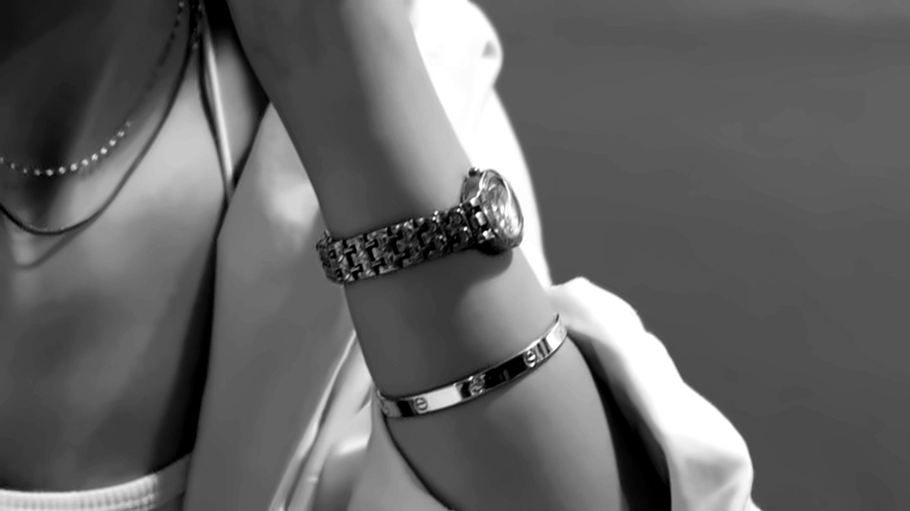

The Case for a Small Watch
Big dials had their decade. A small, slim watch is quieter, easier to wear and closer to how Parisian women have always worn time.
Some links are affiliate links; we may earn a small commission. How this works

Look at the wrists in old photographs of Paris and you will notice how small the watches are. A thin rectangle on a leather strap, a round gold face no bigger than a coin, half hidden under a cuff. For a long while watches grew larger and louder. Now the mood has turned again, and small watches are back where they belong: on the wrists of women who want something good rather than something seen.
Why small looks right now
A small watch fits the quiet way of dressing. It sits under a sweater sleeve instead of pushing it up. It does not compete with your jewelry; it becomes part of it. And it reads as a choice rather than a statement, which is the whole point of quiet luxury.
The watch world has noticed. Elite Traveler described this year how smaller cases are replacing oversized ones as a marker of taste, with many brands now working in the mid-thirties of millimetres rather than the forties. In 2024 Cartier introduced a mini version of the Tank Louis Cartier at Watches and Wonders in Geneva, with a case of 24 by 16.5 millimetres. Rolex still makes its Oyster Perpetual in a 28 millimetre size. Small, in other words, is not a niche; it is a category again.
Shape matters as much as size
A rectangular watch looks smaller and more elegant on the wrist than a round one of the same width, because it follows the line of the arm. That is part of why the Cartier Tank has lasted. Conceived by Louis Cartier in 1917 and released in 1919, it still looks right with a white shirt more than a century later.
Round watches suit a softer, more classic look. Oval and cushion shapes, like the Baignoire that Cartier brought back with a bangle version in 2023, feel more like jewelry than instruments. Choose the shape that matches the rest of what you wear: clean lines for a tailored wardrobe, curves if you lean romantic.
The Small Watch Edit
Small, gold and a little unexpected in shape: watches that sit like jewellery on the wrist.


Piaget introduced the Limelight Gala in 1973, its asymmetric lugs curving like a bangle around the dial; the Sixtie revisits the house’s trapeze shapes of the 1960s. Bvlgari’s Serpenti coils its snake around the wrist, in steel or in rose gold.
How to choose the right size for you
- Measure your wrist. A soft tape measure just above the wrist bone is enough. Slim wrists can wear very small cases without the watch looking lost.
- Look at the lugs, not only the dial. The full length from one end of the case to the other decides how a watch sits. It should not overhang the sides of your wrist.
- Try it with a sleeve. A watch you wear in autumn and winter will live under knitwear and coat cuffs. Check that it slides under them easily.
- Read it from arm's length. A tiny dial is charming, but you should still be able to tell the time at a glance.
Strap or bracelet
A leather strap makes a small watch look softer and more vintage, and it is easy to change with the season: black or dark brown for winter, something lighter for spring. A metal bracelet turns the same watch into a piece of jewelry and stacks well with a bangle or a chain bracelet. If you can, buy the watch on one and add the other later. It is the simplest way to make one watch feel like two.
Quartz is not a compromise
Many small watches have quartz movements, simply because there is little room inside a small case. For everyday wear that is a quiet advantage: quartz is accurate, needs little attention and keeps running when you leave it in a drawer for a week. If you love mechanical watchmaking, there are hand-wound small watches too, but you do not need one to own something beautiful.
New or pre-owned
Small vintage watches are one of the best-value corners of the market, because for years they were out of fashion. A careful pre-owned purchase can bring a classic shape within reach. Our guide to buying a pre-owned Cartier explains what to check before you pay.
How to wear it
- Alone, on a leather strap, with a white shirt and a navy knit. Nothing else needed.
- On a bracelet, next to one gold bangle, with a cashmere turtleneck.
- Under the cuff of a camel coat, so it only shows when you reach for something.
A small watch asks very little of you. It suits most outfits, it ages well and it never shouts. That is exactly why it lasts.
From The Edit
See allOther pieces we would choose ourselves · affiliate links · all at Mytheresa